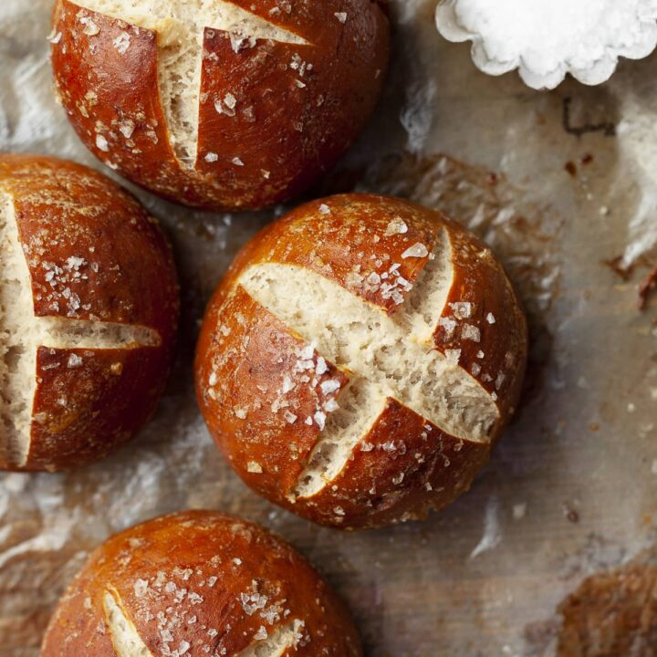
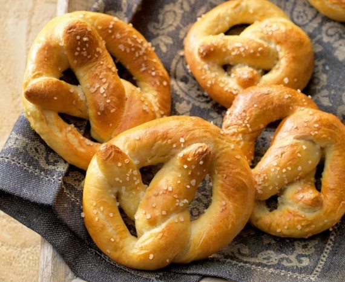
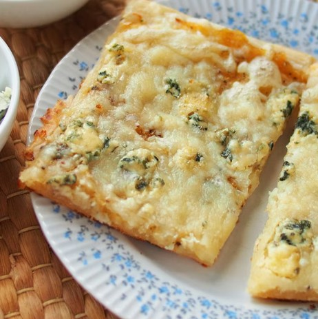
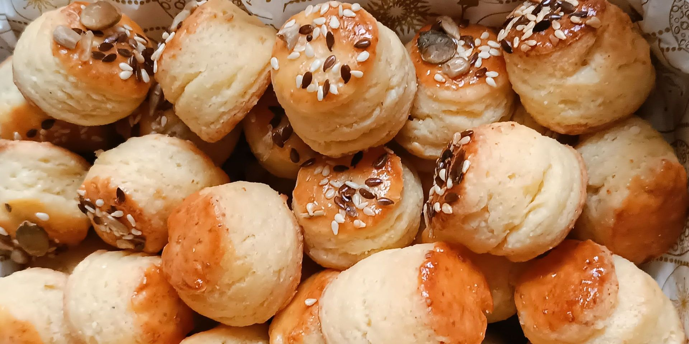
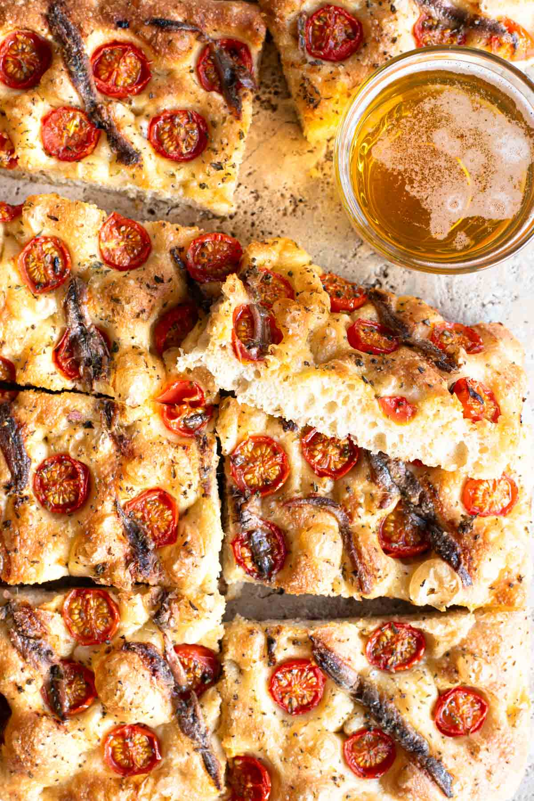

Sós péksüteményeink között a hagyományos kelt és kovászos pékáruktól kezdve a réteges, hajtogatott finomságokig számos változat megtalálható. Kínálatunk összeállításakor a tudatos táplálkozásra és az ételérzékenységekre is figyelünk, így választékunkban teljes kiőrlésű, ősgabonás (például tönkölybúzából vagy alakorlisztből készült), magvas, fehérjedús és szénhidrátcsökkentett, valamint vegán, tej- és laktózmentes, illetve tojásmentes alternatívák is szerepelnek.

Ezek a pékárúk a tészta hajtogatási módjáról kapták a nevüket, amely során az alaptésztába zsiradékot (vajat, sertészsírt vagy margarint) rétegeznek, a nyújtások között pedig pihentetik, hogy a zsiradék ne olvadjon bele a tésztába; sütés közben a vaj víztartalma gőzzé alakulva megemeli a lapokat, így kívül ropogós, belül pedig sok vékony rétegből álló, levegős szerkezetet ad. Két fő típusuk közül a klasszikus, élesztő nélküli leveles tésztából készülnek a roppanósabb darabok (mint a virslis roló és a sajtos masni), míg az élesztővel gazdagított, puhább és dúsabb kelt leveles tészta adja az alapját a sós croissant-oknak, a sós cruffinoknak, a különféle sós csigáknak (pestós, pizzás, baconös), valamint a töltött párnáknak és batyuknak (spenótos, fetás, virslis).

Mindennapi sós kínálatunk alapját a hagyományos kelt és kovászos tésztából sütött pékáruk adják, amelyek között kiemelt helyet kapnak a bajor lúgos perecek és stanglik. A lúgos eljárás során a formázott tésztát sütés előtt enyhe lúgoldatba mártjuk, amely sötétbarna, fényes kérget és jellegzetes, karakteres ízt eredményez, tetejüket pedig hagyományosan durva szemű sóval szórjuk meg. Emellett klasszikus kelt és kovászos tésztából készülnek a változatos feltétekkel szórt stanglik (sós, köményes, sajtos, szezámmagos, lenmagos) valamint a laktató töltelékekkel és ropogós sajtos kérgesítéssel kínált kiflik is (sajtos-sonkás, sajtos-baconös, virslis, juhtúrós, pizzás).

A lepényfélék elnevezése a tészta lapos, kerek vagy ovális alakjára utal, amelyet kemencében vagy sütőben ropogósra sütve kínálunk. Ide tartozik a hagyományos kenyértésztából készülő, gazdagon megpakolt kenyérlángos, más néven pompos (tejfölös alappal, baconnel, lilahagymával és sajttal), valamint a különféle fűszeres lepények (zöldfűszeres, fokhagymás, sajtos feltéttel). A kategória különleges, puhább bélzetű darabjai a sós kalácsok, amelyek például fonott formában, különféle magvakkal vagy sajttal megszórva (szezámmagos, lenmagos, köményes, reszelt sajtos) készülnek.

Vendégváráshoz és napközbeni fogyasztáshoz kínáljuk falatnyi sós aprósüteményeinket, amelyek hajtogatott, kelt vagy omlós tésztából készülve hosszabb ideig is megőrzik frissességüket. A választék gerincét a változatos pogácsák adják, amelyek különböző alapokkal és ízesítésekkel (trappista, cheddar vagy füstölt sajtos, burgonyás, túrós, juhtúrós, medvehagymás, fokhagymás, chilis, baconös) és magvas szórásokkal (köménymagos, lenmagos, szezámmagos) készülnek. A kínálatot a vékonyra nyújtott, ropogós rudak (sajtos, köményes, magvas), a sós kis perecek és a sós kekszek (sós, szezámmagos, lenmagos, fűszeres) teszik teljessé.

Kínálatunkat két klasszikus olasz eredetű sós pékáru is gazdagítja. Az olívaolajjal gazdagított tésztából készülő focaccia egy kívül enyhén ropogós, belül puha és levegős lepénykenyér, amelyet gyakran friss fűszerekkel és tengeri sóval ízesítünk (rozmaringos, nagy szemű tengeri sós, olívabogyós, aszalt paradicsomos). Mellette megtalálható az olasz étkezések elmaradhatatlan kísérője, a vékonyra sodort, száraz és roppanós grissini kenyérpálcika is (natúr, szezámmagos, rozmaringos, sajtos), valamint a dél-olasz taralli, amely egy fehérborral és olívaolajjal gyúrt, ropogós sós pereckarika (édesköményes, fekete borsos, chilis). A töltött, rétegesebb olasz különlegességeket pedig a sós sfogliatella (spenótos-ricottás, sonkás-sajtos) és a sütőben sült, félhold alakú panzerotti (paradicsomos-mozzarellás, sonkás-gombás) képviseli.
